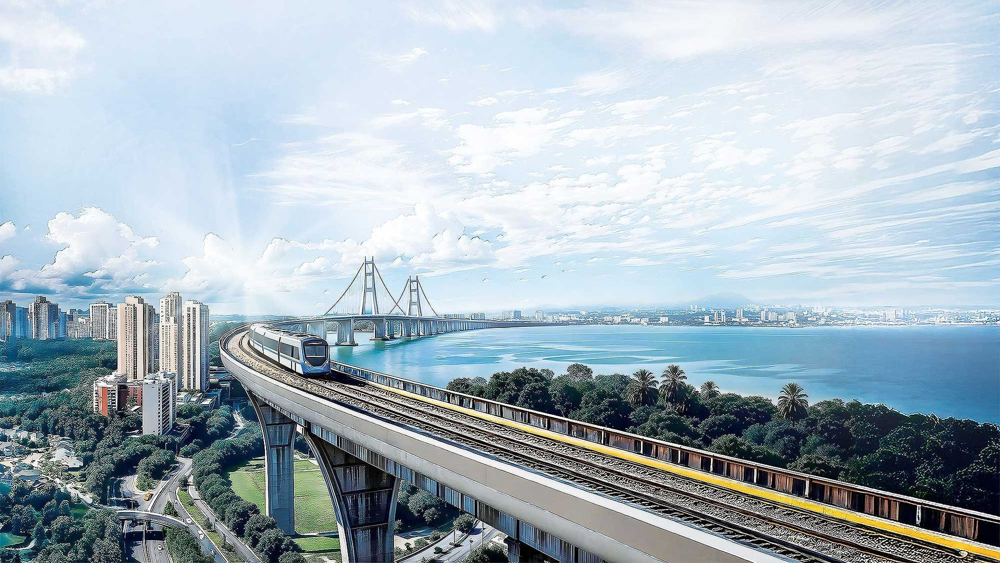
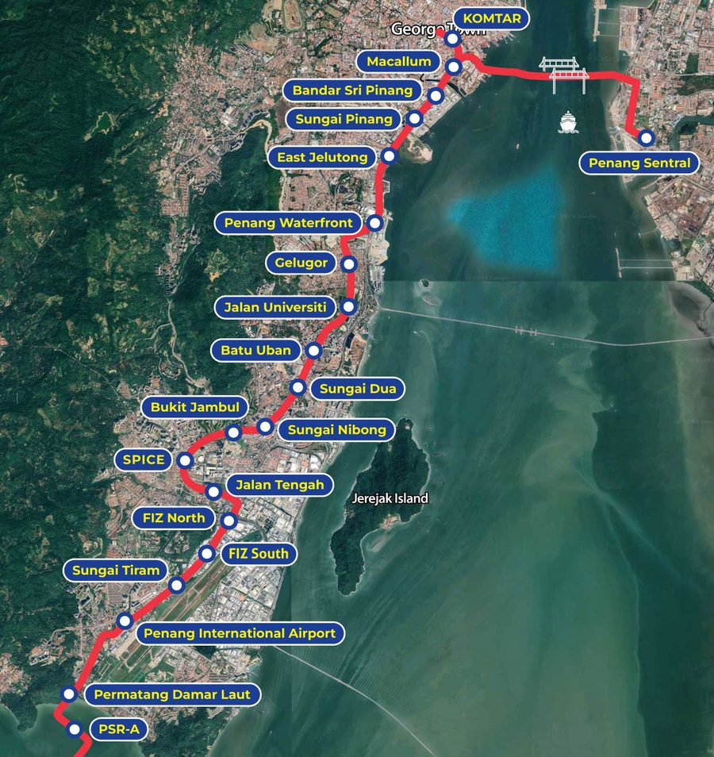

Report a concern
Noise at night, dust, a blocked entrance or an unsafe walkway. Tell us where it is and we send it to the team responsible.
Report a concern
Road closures, night works and access to shops along the Mutiara Line, posted by the teams building it.
Jalan Sultan Azlan Shah is partly closed between Sunny Point junction and the USM field for tree felling. Use Jalan Tun Dr Awang instead.
View the detour29.5 km from Silicon Island to KOMTAR and Penang Sentral. Choose a station to see what's happening near it.

No works this weekWorks near this station
Every notice shows its dates and working hours so you can plan your trip.
Showing 6 notices
No current notices on this road.
Noise at night, dust, a blocked entrance or an unsafe walkway. Tell us where it is and we send it to the team responsible.
Report a concernUse the ticket ID you got when you sent your report.

Check whether customers and deliveries can still reach shops on your road, and where the temporary entrances are.
Check business access